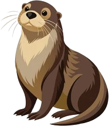

A Conservation Success Story
River otters have staged a successful comeback in New York,
expanding from the eastern region to nearly statewide.
Scroll for more

River otters have staged a successful comeback in New York,
expanding from the eastern region to nearly statewide.
Scroll for more
The river otters’ range has been significantly reduced due to habitat loss, a process that began with the European colonization of the Americas. Additionally, river otter populations suffered substantial declines from over-harvesting during the fur trade, a major economic activity in North America until the mid-19th century. The excessive trapping of river otters for their valuable pelts had a devastating effect on their numbers. Historically found in all watersheds in New York State, unregulated harvest, pollution, and habitat destruction decimated populations. The North American river otter was regionally extinct in Western New York in the early 1900s.
In the late 1990s, the New York River Otter Project was launched to restore river otters to the watersheds of western New York. Volunteers and staff from the Department of Environmental Conservation (DEC) live-trapped otters primarily from the Adirondacks, with additional animals captured from the Catskills and Hudson Valley. New York State was committed to reintroduce only otters from New York State, whereas other programs sourced otters from Louisiana and Missouri. While all North American river otters look similar, there are several subspecies of otters throughout the world. State officials and scientists sought to keep the same subspecies of otters for translocation as they were well adapted for weather and other environmental conditions specific to New York State.
Between 1995 and 2000, otters were relocated from eastern New York and released at 16 sites throughout the western part of the state including the Finger Lakes and Genesee River. Many of these areas had been without otter populations for longer than local residents could recall.
The North American river otter is found throughout North America, inhabiting inland waterways and coastal areas in Canada, the Pacific Northwest, the Atlantic states, and states on the Gulf of Mexico. They also inhabit the forested regions near the Pacific coast in North America. The species is also present throughout Alaska, including the Aleutian Islands, and the north slope of the Brooks Range.
Urbanization and pollution, though, have resulted in a reduction in the otters' range in the United States. They are now absent or rare in Arizona, Kansas, Nebraska, New Mexico, North Dakota, Ohio, Oklahoma, South Dakota, and Tennessee. Reintroduction projects have expanded their distribution in recent years, such as in West Virginia, and especially in the Midwestern United States.
The North American river otter is considered a species of least concern according to the IUCN Red List, as it is not currently declining at a rate sufficient for a threat category. By the early 1900s, North American river otter populations had declined throughout large portions of their historic range in North America.
However, improvements in water quality (through enactment of clean water regulations) and furbearer management techniques have permitted river otters to regain portions of their range in many areas. Reintroduction projects have been particularly valuable in restoring populations in many areas of the United States. The species is widely distributed throughout its range. In many places, the populations have re-established themselves because of conservation initiatives.